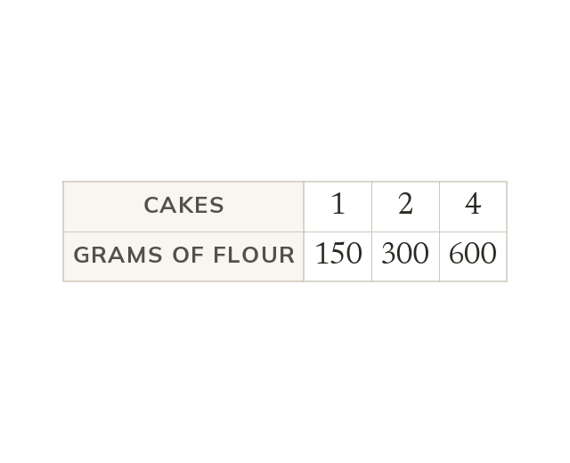
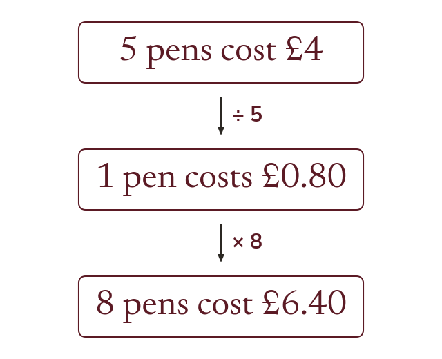
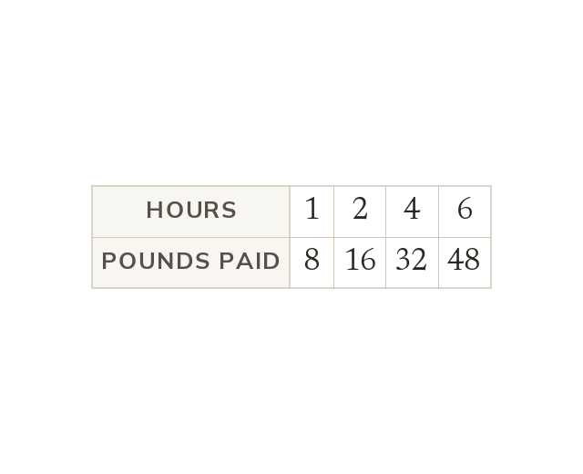
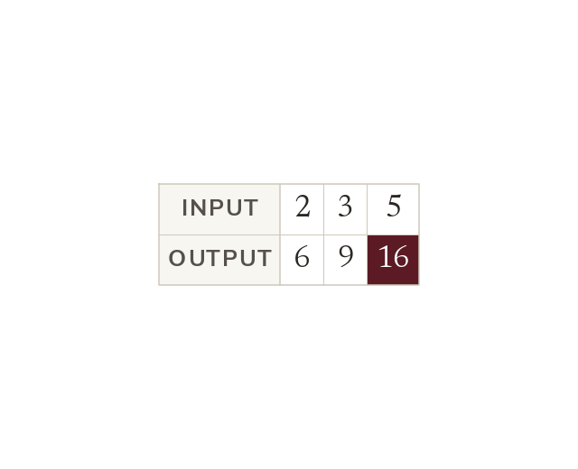
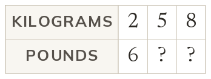
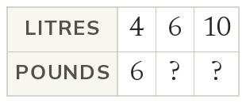
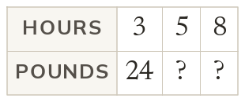
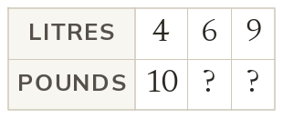

Double one, double the other
Two quantities are in direct proportion when doubling one doubles the other. So cakes need g of flour, and cakes need g.
Recipes, shopping and wages all scale up and down in proportion. Today we find the value of one, then scale to any amount.
Work down the page at your own pace. Write every answer in your book first, then click to check it.
Read each card, then follow the worked examples one step at a time.

Two quantities are in direct proportion when doubling one doubles the other. So cakes need g of flour, and cakes need g.

The unitary method finds the value of one item first, by dividing. Then it multiplies to reach the amount wanted.
Pick an answer. If it's wrong, the feedback tells you which mistake it was.
Read each card, then follow the worked examples one step at a time.

In direct proportion, one multiplier turns every top value into the one below. If hours earn the multiplier is

The multiplier is checked on every pair, not just one. If one pair breaks the pattern, the table is not in proportion.


Pick an answer. If it's wrong, the feedback tells you which mistake it was.


Finished? Next lesson: 10.21.2 Best Buys and Currency.
Log in, then search for a code to practise that skill.